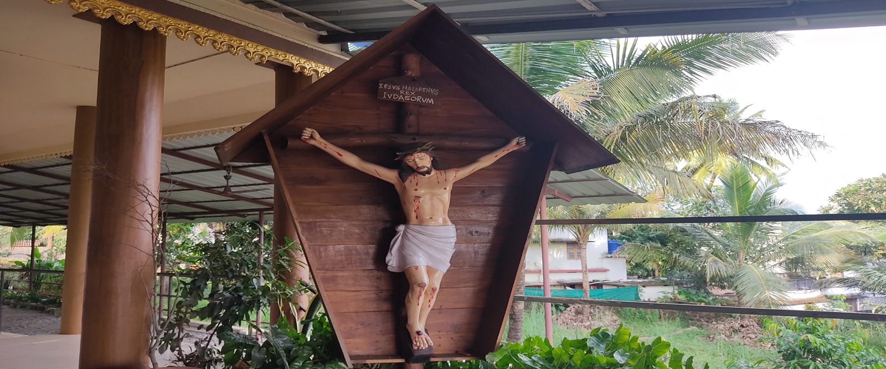

| Day | Morning | Afternoon |
|---|---|---|
| Tuesday | 9.15 AM-Holy Mass & Novena | 4.30 PM-Holy Mass & Novena |
| Sunday | 8.30Am | Nil |
| Otherdays | 7.00 Am |
Priest will be available on every Tuesday from 9.00 AM to 1.00 PM
O holy St. Anthony, you are known for the power and abundance of your miracles. Jesus came into your arms as a humble little child. Pray for me to the Child Jesus for my needs and desires
O’ Gracious St. Anthony,
we praise you for your great virtues and remarkable humility.
With the help of Jesus nothing is impossible with you.
So we know that, sickness and death, perils and snares,
evils and dangers disappear through your intercession.
You find what is lost, you comfort the afflicted
and you help the worst of the sinners to repent.
There is nothing impossible for you O’ dear Saint Anthony.
O’ faithful friend of Baby Jesus please be our support,
our patron and our eternal benefactor.
Procure all our needs, both material and spiritual from the Heavenly
Father through your kind and powerful intercession, And more
especially, the one we beg of you now …(Specify the intention here)
O’ most loving and gentle Saint,
ഓ! ധന്യനായ വിശുദ്ധ അന്തോനീസേ നന്മകളുടെ നിറകുടവും എളിമയുടെ ദർപ്പണവുമായ അങ്ങയെ ഞങ്ങൾ സ്തുതിക്കുന്നു. അങ്ങേ മധ്യസ്ഥതയിൽ രോഗവും മരണവും അബദ്ധവും അനർത്ഥങ്ങളും ഇല്ലാതാകുന്നു എന്ന് ഞങ്ങൾ അറിയുന്നു. നഷ്ടപെട്ട വസ്തുക്കൾ വീണ്ടെടുക്കുന്നതിനും ദുഃഖിതർക്കു ആശ്വാസവും പാപികൾക്ക് അനുതാപവും നൽകുന്നതിനും കഴിവുള്ള അങ്ങേക്ക് അസാധ്യമായി ഒന്നുമില്ല. ഉണ്ണീശോയുടെ വിശ്വസ്ത സ്നേഹിതനായ വിശുദ്ധ അന്തോനീസേ അങ്ങ് ഞങ്ങൾക്ക് എന്നും തുണയും സങ്കേതവും ആയിരിക്കണമേ. ഞങ്ങളുടെ ആത്മീകവും ഭൗതീകവും ആയ സകല ആവശ്യങ്ങളിലും
St. James Church
Nellipuzha
Mannarkkad, Palakkad-678582